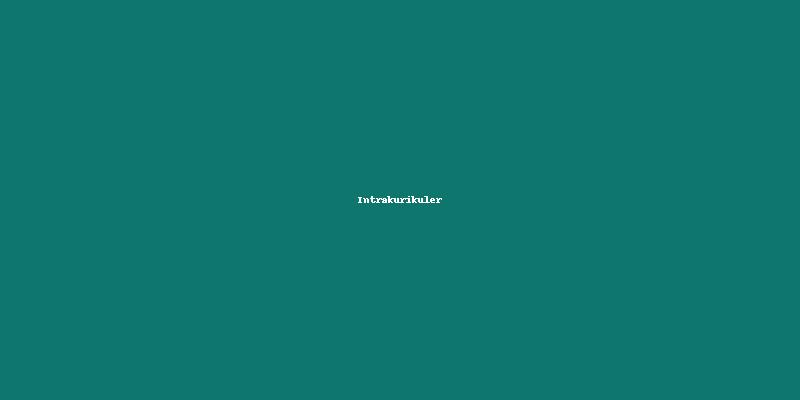
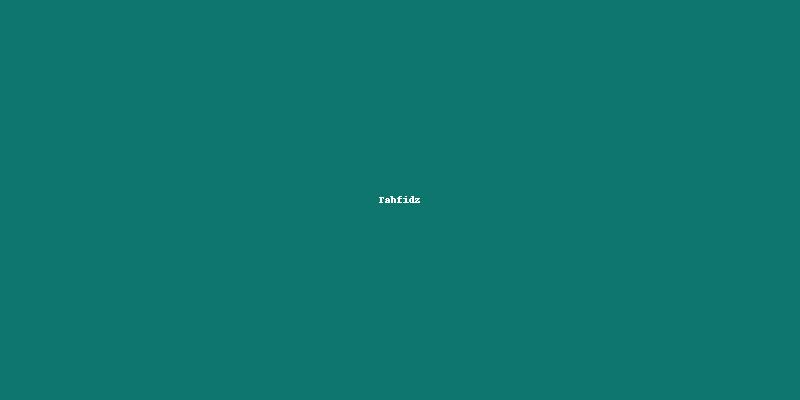
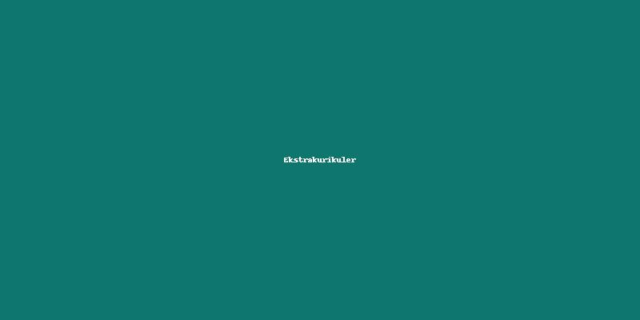

Selamat Datang di YPP An-Nur Al-Mustafa
Berita Terbaru

Tasmi Al-Qur'an Siswa SD Ip AN-Nur Kelas 4
Kegiatan tasmi Al-Qur'an untuk menumbuhkan kecintaan siswa terhadap Al-Qur'an
dan melatih kepercayaan diri di hadapan teman-teman.
Lomba Kebersihan Kelas Meningkatkan Disiplin Siswa
Setiap kelas berkompetisi menjaga kebersihan dan kerapian ruangan sebagai bagian
dari pembiasaan karakter peduli lingkungan.
Informasi & Pengumuman Penting Sekolah
Lihat rangkuman informasi dan pengumuman terbaru terkait kegiatan,
akademik, dan program sekolah lainnya.
Artikel Pilihan

Tips Belajar Nyaman dan Fokus di Sekolah
Panduan sederhana bagi siswa untuk mengatur waktu belajar, menjaga konsentrasi,
dan membangun kebiasaan belajar yang menyenangkan di rumah maupun di sekolah.

Membangun Karakter Islami Sejak Dini
Kerja sama antara guru dan orang tua dalam menanamkan nilai kejujuran, disiplin,
serta kepedulian sosial melalui kegiatan belajar dan pembiasaan harian.

Gerakan Literasi di Lingkungan Sekolah
Kegiatan membaca bersama, pojok baca kelas, dan penulisan jurnal harian
untuk menumbuhkan kecintaan siswa terhadap buku dan ilmu pengetahuan.